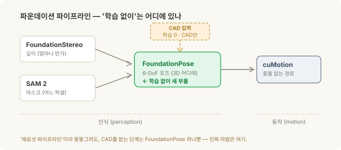
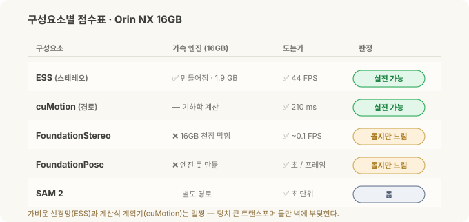
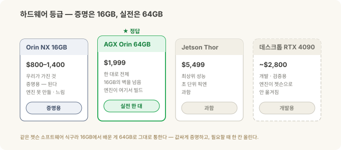

로봇의 뇌를 엣지에 올리기 (2) — Isaac ROS와 파운데이션 모델, 엣지에서 돌려보다¶
현장 노트 · '로봇의 뇌를 엣지에' 2부작 중 2부. 1부에선 맨 Jetson 보드에 JetPack을 깔고 ROS 2까지 올렸습니다. 이번 편은 그 위에 Isaac ROS와 파운데이션 모델 파이프라인을 얹었어요. "학습 없이 새 부품을 잡는다"는 그 약속이, 우리가 가진 작은 엣지 컴퓨터에서도 정말 동작하는지 직접 확인해 봤습니다.
로봇 비전 시리즈에서는 로봇이 물체를 잡기까지의 과정을 개념으로 훑었습니다. 스테레오로 깊이를 재고, 마스크로 물체를 오려내고, 6-DoF 포즈를 잡고, 로봇 팔이 갈 길을 짜는 흐름이죠. 심화편에서는 그 단계를 각각 맡는 세 모델, FoundationStereo·SAM 2·FoundationPose를 하나씩 뜯어봤고요.
이번엔 그 모델들을 실제로 실행해 봤습니다. NVIDIA가 내세우는 "제로샷"은 이런 그림이에요. 한 번도 본 적 없는 물체라도, 따로 학습시키지 않고 CAD 파일 하나만 주면 잡는다. 근사한 데모 영상도 많죠. 그런데 이게 클라우드의 커다란 GPU가 아니라 셀에 볼트로 붙는 손바닥만 한 컴퓨터에서도 도느냐, 그건 전혀 다른 문제입니다.
그래서 사무실에서 굴러 다니던 Jetson Orin NX 16GB에 직접 올려봤습니다. 결과부터 말하면, 동작합니다. 처음 보는 물체를, 학습 없이, CAD 하나로. 어떻게 세웠고 무엇을 봤는지, 실전으로 넘어간다면 뭐가 남는지를 아래에 적었어요.
(1부와 마찬가지로, 이건 특정 현장 배치가 아니라 일반적인 엣지 R&D 경험입니다.)
30초 요약¶
- 파운데이션 모델은 특정 물체용으로 따로 학습시키지 않아도 되는 큰 범용 모델이에요. 새로운 부품을 가져와도 데이터를 모아 다시 학습할 필요가 없다는 게 매력이죠.
- 파이프라인은 네 단계. 깊이(FoundationStereo) → 마스크(SAM 2) → 6-DoF 포즈(FoundationPose) → 경로(cuMotion). '새 부품, 학습 없이'의 실제 주인공은 이 중 FoundationPose 하나예요. CAD만 있으면 되는 곳이 여기라서요.
- 증명한 것. 처음 보는 장면의 깊이, 전동드릴을 오려낸 마스크(점수 0.86), 병과 전동드릴 두 CAD를 갈아끼우며 각각 300프레임 넘게 포즈 추적, 충돌 없는 7축 경로를 210 ms에. 이 전부를 우리 Orin NX에서 직접 돌렸습니다.
- 속도. 가벼운 스테레오(ESS, 초당 44프레임)와 경로 계획(cuMotion, 210 ms)은 지금도 실전 속도가 나옵니다. 무거운 두 모델은 이 작은 엣지 컴퓨터에서 프레임당 몇 초, 걷는 속도고요. 픽(집기) 한 번이 몇 초 걸려도 되는 일이면 괜찮습니다.
- 하드웨어. 개념은 이 16GB 엣지 컴퓨터로 증명이 끝났습니다. 실전에서 한 대로 제 속도를 내려면 다음 칸인 AGX Orin 64GB($1,999)면 됩니다.
- 무거운 학습은 데스크톱이나 클라우드에서, 추론은 엣지에서. 1부의 그 큰 그림은 여기서도 그대로입니다.
Isaac ROS부터 — GPU로 동작하는 ROS 2¶
1부 끝에서 "다음은 Isaac ROS"라고 예고했었죠. Isaac ROS는 NVIDIA가 만든, GPU로 가속되는 ROS 2 인식 패키지 모음입니다. 로봇 비전 시리즈에서 본 파이프라인을 젯슨 GPU 위에서 빠르게 돌리라고 만든 물건이에요. 카메라와 모델 사이에 데이터를 복사하지 않는 zero-copy 방식이라 특히 빠릅니다.
여기서 1부에 예고한 갈림길을 실제로 만납니다. 요즘 Isaac ROS는 두 갈래예요.
- JetPack 6 / Isaac ROS 3.x 계열 — 제가 선 곳입니다. 안정적이고 생태계가 두껍죠. 대신 최신 모델 몇 개는 여기 안 옵니다.
- JetPack 7 / Isaac ROS 4.x 계열 — 최신입니다. FoundationStereo의 최신판이나 SAM 2 정식 버전을 쓰려면 이쪽인데, 엣지 컴퓨터를 통째로 다시 플래시해야 합니다.
저는 6으로 이미 올려둔 엣지 컴퓨터를 다시 갈아엎지 않고, 3.x 위에서 갈 수 있는 데까지 가봤어요. 그게 "지금 이 엣지 컴퓨터로 뭐가 되나"라는 질문엔 오히려 더 정직한 답이 됩니다.
그 "제로샷"이 각 단계에서 뜻하는 것¶
파이프라인을 다시 보되, 이번엔 어느 단계가 학습이 필요 없는지 표시해 가며 봅시다.

| 단계 | 하는 일 | "제로샷"이라 함은 | 갈래 |
|---|---|---|---|
| FoundationStereo | 온 장면이 얼마나 먼가? | 처음 보는 표면·장면 아무거나 (수동식, 적외선 안 씀) | 인식 |
| SAM 2 | 어느 픽셀이 그 물체인가? | 클릭/박스 힌트만 주면 어떤 물체든 (학습 0) | 인식 |
| FoundationPose | 그게 3D 공간 어디에 있나? | CAD만 주면 처음 보는 물체든 (학습 0) | 인식 |
| cuMotion | 팔이 어떻게 거기 닿나? | (학습 모델이 아니라 기하학 경로 계획기) | 동작 |
여기서 오해 하나를 풀고 갈게요. "새로운 부품을 가져와도 학습이 필요 없다"는 건 사실 FoundationPose 한 단계 이야기입니다. CAD를 받는 데가 여기뿐이거든요. 앞의 깊이·마스크는 원래부터 물체를 안 가리고, 뒤의 경로는 학습과 상관없는 계산입니다. 그러니 "제로샷 파이프라인"이라고 뭉뚱그려도, 진짜 핵심은 포즈 단계에 있다고 봐야 맞습니다.
깊이 단계에서 왜 하필 FoundationStereo를 골랐을까요. 심화편에서 봤듯이, 반짝이는 금속이나 무늬 없는 매끈한 면은 스테레오가 제일 힘들어하는 상대입니다. 짝을 맞출 무늬가 없으니 깊이에 구멍이 뚫리거든요. FoundationStereo는 여기에 단안(單眼) 깊이 짐작(Depth Anything V2)을 섞어 그 구멍을 메웁니다. 가벼운 ESS는 실시간이 되는 대신 이런 반사면에 약하고요. 그러니 상대가 반짝이는 부품이라면 무거운 쪽이 값을 합니다.

학습형 스테레오가 순진한 방식과 얼마나 다른지 한눈에 보여줍니다. 왼쪽은 카메라 RGB, 가운데는 고전적 블록 매칭(가장 순진한 기준선)이 무너지는 모습 — 어둡고 무늬 없는 영역에 잡음과 가로 줄무늬, 시커먼 구멍이 남아요. 오른쪽은 FoundationStereo가 그 구멍을 메운 깨끗한 깊이입니다. (가운데는 ESS가 아니에요 — ESS도 학습형이라 이 순진한 기준선보다 낫습니다. 여기선 "학습형이 순진한 방식을 왜 이기나"를 보는 그림이에요.) 왼쪽·오른쪽은 Orin NX에서 실제로 잡은 캡처이고, 가운데는 테스터에서 실제로 캡쳐한 원본 블록 매칭 깊이 히트맵을 참조해 만든 시뮬레이션이라, 두 번째 캡쳐가 실측은 아니어도 실제 실패 모드와 꽤 가깝게 보여요.
참고 — 왜 적외선을 안 쓰는 게 오히려 나을 때가 있나
깊이 카메라 중엔 적외선(IR) 점무늬를 쏘아 그 왜곡으로 거리를 재는 방식이 있어요(구조광/액티브 스테레오). 편하지만, 반짝이는 금속 앞에서는 그 점무늬가 **여러 번 되튀어(inter-reflection)** 있지도 않은 유령 깊이를 만들어냅니다. FoundationStereo와 ESS는 둘 다 **적외선을 안 쓰는(수동식)** 학습형 스테레오라 이 유령이 애초에 안 생겨요. 대신 무늬가 없는 면에서 생기는 구멍 문제는 남는데, 그걸 단안 깊이 짐작으로 메우는 게 FoundationStereo입니다.실제로 돌려본 것 — 개념 증명¶
이번 세션에 젯슨 위에서 직접 확인한 것들입니다. 네 단계를 차례로 볼게요.
깊이 — FoundationStereo. 처음 보는 책상 장면을 통째로, 학습 없이 촘촘한 깊이 맵으로 바꿨습니다.

왼쪽이 카메라가 본 그대로, 오른쪽이 FoundationStereo가 뽑은 깊이입니다. 가까울수록 붉고 멀수록 파래요. 한 번도 학습한 적 없는 장면인데도 컵·키보드·화장지 갑의 거리가 또렷이 나뉩니다.
마스크 — SAM 2. 박스 하나와 점 하나만 힌트로 찍었더니 물체를 배경에서 깔끔하게 오려냈습니다. 신뢰 점수 0.86, 이것도 학습은 안 시켰고요.

초록으로 칠해진 영역이 SAM 2가 잡아낸 물체(전동드릴)입니다. 미리 배운 물체 목록이 없어도, 어디를 가리키는지만 알려주면 그 자리를 오려내요.
포즈 — FoundationPose. 여기가 "학습 없이 새 부품"의 핵심입니다. CAD를 갈아끼우며 두 물체(병 하나, 전동드릴 하나)의 6-DoF 포즈를 각각 300프레임 넘게 이어서 추적했어요. 코드는 그대로, CAD 파일만 바꿨습니다.

초록 상자가 첫 번째 물체, 머스터드 병의 6-DoF 포즈입니다. CAD 파일 하나만 주면, 학습 없이도 물체가 움직이는 내내 자세를 따라가요. Orin NX에서 직접 돌린 화면입니다.

이번에 CAD 파일만 전동드릴 CAD 파일로 바꿔 끼웠습니다. 코드는 한 줄도 안 건드리고요. 병에서 전동드릴로, 이게 '학습 없이 새 부품'의 실제 모습이에요.
경로 — cuMotion. 마지막으로, 팔이 그 물체까지 부딪히지 않고 갈 길입니다. 7축 팔(데모용 Franka 설정)의 경로를 210 ms에 짜냈어요.

일곱 관절(J1~J7)의 각도가 출발부터 목표까지 부드럽게 이어집니다. 충돌 없이 한 번에 계산된 궤적이에요. (그래프의 축 이름은 원본 그대로 영어입니다.)
네 단계가 다 돌았습니다. 학습 없이 CAD 하나로 새 물체를 잡는 그림이, 클라우드가 아닌 셀 옆 작은 컴퓨터에서 그대로 나온 거죠. 개념 증명으로는 충분합니다.
무엇이 빠르고, 무엇이 아직 느린가¶
같은 젯슨에서 다섯 조각을 나란히 돌려보면 속도가 뚜렷이 둘로 갈립니다.

| 구성요소 | 가속 엔진 | 동작하는가 | 속도 |
|---|---|---|---|
| ESS (스테레오) | ✅ 만들어짐 · 1.9 GB | ✅ | 44 FPS · 실전 속도 |
| cuMotion (경로) | 해당 없음 (기하학) | ✅ | 210 ms · 실전 속도 |
| FoundationStereo | ❌ 이 엣지 컴퓨터에선 못 만듦 | ✅ | ~0.1 FPS · 느림 |
| FoundationPose | ❌ 이 엣지 컴퓨터에선 못 만듦 | ✅ | 초/프레임 · 느림 |
| SAM 2 | 해당 없음 (별도 경로) | ✅ | 초 단위 |
가벼운 스테레오(ESS)와 계산식 경로 계획기(cuMotion)는 지금도 실전 속도가 나옵니다. 무거운 두 트랜스포머, FoundationStereo와 FoundationPose는 이 작은 16GB 엣지 컴퓨터에서 프레임당 몇 초씩, 걷는 속도로 돌고요. 실시간은 아니지만 픽 한 번이 몇 초 걸려도 되는 일이라면 문제될 게 없습니다. 더 큰 엣지 컴퓨터에선 이대로 빨라지고요. Vention의 GRIIP 데모도 비슷한 분업이었어요. 인식 한 사이클이 2~6초쯤 걸리는데, 그동안 로봇은 직전 동작을 하며 시간을 겹쳐 씁니다.
왜 무거운 둘만 느릴까요. 젯슨은 CPU와 GPU가 메모리를 나눠 갖지 않고 함께 씁니다(통합 메모리, 여기선 다 합쳐 16GB). 큰 모델을 최고 속도로 실행하려면 먼저 하드웨어에 맞춰 가속 엔진으로 구워야 하는데, 이 굽는 과정이 순간적으로 메모리를 크게 먹어요. 작은 엣지 컴퓨터는 그 고비를 못 넘깁니다. 그래서 엔진 없이, 좀 더 범용적이고 그만큼 느린 경로로 동작합니다. 그게 '걷는 속도'의 정체입니다. 엣지 컴퓨터를 한 칸만 키우면 이 고비가 사라집니다.
참고 — '가속 엔진'이 뭐고 왜 만들 때 메모리를 더 쓰나
같은 모델이라도, 그냥 범용 방식으로 돌리는 것과 "이 하드웨어 전용으로 미리 최적화해 구워둔" 형태로 돌리는 것 사이엔 속도 차가 큽니다. 후자를 여기선 **가속 엔진**(NVIDIA의 TensorRT 엔진)이라 부르는데, 이걸 굽는 과정에서 엔진은 *같은 연산을 하는 여러 방법을 실제로 다 돌려보고 제일 빠른 걸 고릅니다*(자동 튜닝). 이 "다 돌려보는" 순간에 메모리를 실행 때보다 훨씬 많이 씁니다. 데스크톱 GPU는 자기 전용 메모리가 넉넉해 문제가 안 되지만, 통합 16GB에선 이 순간이 천장을 쳐요. 게다가 젯슨의 스왑(디스크로 넘기는 여유 공간)은 GPU 메모리를 대신 받아주지 못해서, 넘칠 곳도 없이 그냥 실패합니다. 큰 엣지 컴퓨터에선 이 여유가 생겨 엔진이 엣지 컴퓨터 위에서 그대로 만들어지고, 무거운 모델도 제 속도가 납니다.ESS냐 FoundationStereo냐 — 속도와 정확도의 맞바꿈¶
앞서 반짝이는 면에서는 FoundationStereo가 강하다고 했죠. 그럼 깊이는 실제로 둘 중 뭘 쓸까요. 둘 다 학습형 스테레오이고 적외선을 안 써서 유령 깊이는 피하는데, 갈리는 지점은 결국 속도와 정확도의 맞바꿈입니다.
| ESS | FoundationStereo | |
|---|---|---|
| 성격 | 가벼운 실시간 모델 | 정확도 우선의 큰 범용 모델 |
| 속도(16GB) | 44 FPS, 실시간 | ~0.1 FPS, 걷는 속도 |
| 가속 엔진(16GB) | 만들어짐 | 못 만듦(우회로로만 돎) |
| 어려운 표면 | 반짝이는·무늬 없는 면에 약함 | 단안 깊이 짐작을 섞어 구멍을 메움 → 강함 |
| 도입 | Isaac ROS 기본 제공(드롭인) | 별도 셋업, 무거움 |
어떻게 고르나. 표면이 평범하고 실시간이 필요하면 ESS입니다. 크롬처럼 반사가 심하거나 무늬가 없어 깊이에 구멍이 뚫리는 어려운 표면이면 FoundationStereo가 값을 하고요. 다만 16GB 엣지 컴퓨터에선 FoundationStereo가 실시간이 안 되니, 정확도와 속도를 둘 다 원하면 더 큰 엣지 컴퓨터가 필요합니다.
그래서 이번 결론은 이래요. 지금 16GB 엣지 컴퓨터에서 실전으로 쓸 깊이는 ESS, FoundationStereo는 '깊이가 어디까지 깨끗해질 수 있나'라는 정확도 상한을 보여주는 쪽입니다. (같은 실시간 계열엔 ESMStereo라는 연구용 대안도 있었지만, ESS가 Isaac ROS 공식 지원 드롭인이라 직접 빌드해야 하는 쪽보다 손이 훨씬 덜 갑니다.)
내가 부딪힌 벽들 — 셋업 현장 기록¶
파운데이션 모델을 젯슨에 올리는 구간은, 1부의 그 교훈이 더 지독하게 반복되는 곳이었어요. '버전이 한 줄로 맞물려 있다'는 그 이야기요. 몇 개만 추려봅니다.
- numpy는 반드시 1.x로. 젯슨용 파이토치는 numpy 2 위에서
_ARRAY_API not found를 뱉으며 그냥 죽습니다. 데스크톱에선 아무렇지 않게 최신 numpy를 쓰던 습관이 여기서 배신하죠. - SAM 2는
--no-deps로 설치. 그냥 설치하면 딸려오는 의존성이, 애써 맞춰둔 젯슨 전용 파이토치를 엉뚱한 CUDA 버전으로 덮어버립니다. 1부의 "pip install torch가 배신한다"가 그대로 재방문합니다. - 큰 CAD 메시는 메모리를 넘칩니다. 포즈 추정은 물체 3D 모델을 여러 각도로 가정해보며 맞추는데, 메시가 촘촘하면 그 가정들이 메모리를 잡아먹어요. 메시를 성기게 줄이고(open3d), 시도할 각도 후보 수를 줄이고, 메모리를 조각내 쓰게 달래야 겨우 동작합니다.
- 그 밖에 PyTorch3D와 nvdiffrast를 소스에서 직접 빌드하고, opencv 버전을 고정하고, 죽어버리는 C++ 루틴은 순수 넘파이(numpy)로 우회하고. 크고 작은 손질이 열 개 남짓입니다.
지루하게 들리겠지만 결국 한 가지입니다. 엣지에서 파운데이션 모델을 세우는 어려움은 모델이 어려워서가 아니라, 그 아래를 받치는 열두 개 버전이 전부 한 줄로 맞물려 있어서예요. 이 맞물림을 한 번 지도로 그려두면 다음 사람은 반나절을 법니다. (그대로 재현할 수 있게, 손질 내역과 굳혀둔 도커 이미지는 따로 남겨뒀어요.)
다음 단계로 간다면 — 어떤 엣지 컴퓨터¶
16GB로 개념은 증명됐으니, 실전이라면 다음 질문이 자연스럽습니다. 그럼 뭘 사야 제 속도가 날까요.

- Orin NX 16GB (우리가 가진 것, 대략 $800~1,400) — 파이프라인이 동작한다를 증명한 엣지 컴퓨터입니다. 무거운 모델은 걷는 속도지만, 개념 증명엔 이거면 됩니다.
- AGX Orin 64GB ($1,999) — 다음 칸이자 정답. 같은 젯슨 소프트웨어 식구라 여기서 배운 게 그대로 통하고, 무거운 모델의 가속 엔진도 엣지 컴퓨터 위에서 바로 만들어집니다. 파이프라인 전체를 한 대에서 제 속도로 돌려요. ("느린 base + 빠른 accelerator"로 두 층을 나누는 구성도 있지만, 그건 실시간 분업이 필요할 때 얘기고 여기선 한 대로 충분합니다.)
- Jetson Thor ($5,499) — 픽 한 번이 초 단위여도 되는 작업엔 과합니다.
- 데스크톱 GPU(RTX 4090, 대략 $2,800) — 개발·검증용으로는 훌륭하지만, 여기서 구운 가속 엔진은 하드웨어가 달라 젯슨으로 그대로 옮겨지지 않아요. 최종 검증은 실제 엣지 컴퓨터에서 해야 합니다.
증명은 16GB로 끝났습니다. 실전용은 64GB고요.
큰 그림 — 그래서 이게 어디로 가나¶
1부의 큰 그림이 여기서도 그대로입니다. 무거운 학습은 데스크톱이나 클라우드에서, 추론은 엣지에서. 이번 편이 더한 건, 그 "추론" 칸에 파운데이션 모델을 실제로 앉혀보고, 가진 엣지 컴퓨터에서 동작하는 걸 확인한 겁니다.
다음으로 확인할 것도 분명해졌습니다.
- 진짜 물체로, CAD를 그때그때 갈아끼우는 현장 테스트. 데모의 병·전동드릴이 아니라, 손에 쥔 실제 부품으로요.
- 반짝이는 금속면에서의 깊이 비교. 반사가 심한 하드서피스에서 FoundationStereo의 구멍 메우기가 정말 값을 하는지, 가벼운 ESS와 나란히 놓고 봅니다.
- 그리고 어떤 작업이 이 제로샷 픽 파이프라인에 값을 낸다 싶으면, 그때 스펙은 AGX Orin 64GB입니다.
정리¶
| 단계 | 핵심 | 부딪힌 벽 |
|---|---|---|
| Isaac ROS | GPU로 가속되는 ROS 2 인식 층 | 두 트랙(JetPack 6/3.x vs 7/4.x) — 최신 모델은 재플래시 필요 |
| 제로샷의 정체 | 파이프라인 4단계 | "학습 없이 새 부품"은 사실 FoundationPose 한 단계의 주장 |
| 개념 증명 | 네 조각 다 돌았고, CAD 교체로 새 물체까지 | (증명 완료 · 우리 Orin NX에서) |
| 속도 | 가벼운 모델·계획기는 실전 속도, 무거운 둘은 아직 느림 | 작은 엣지 컴퓨터의 통합 메모리 — 큰 엣지 컴퓨터에선 풀림 |
| 셋업 | 버전이 한 줄로 맞물림 | numpy 1.x 고정 · SAM 2 --no-deps · 메시 OOM |
| 하드웨어 | 증명 16GB, 실전 64GB | 데스크톱 GPU 엔진은 젯슨으로 안 옮겨짐 |
기억할 한 가지: 파운데이션 모델 픽 파이프라인은 손바닥만 한 엣지 컴퓨터에서 이미 동작합니다. 학습 없이 CAD 하나로 처음 보는 물체를 잡는 그림이, 클라우드가 아니라 셀 옆 작은 컴퓨터에서 나오는 거죠. 무거운 두 모델이 아직 걷는 속도인 건 엣지 컴퓨터를 한 칸 키우면 풀립니다. 값싸게 '되는지'부터 증명하고 필요할 때 올라타는 것, 그게 엣지 AI의 현실적인 사다리입니다.
관련: 스테레오 비전에서 목표물 잡기까지 · 모델 안을 들여다보다 — 심화 1부 · 로봇의 뇌를 엣지에 (1) — JetPack부터 ROS 2까지 · Physical AI에 투자한다면 — 코봇 투자편
출처와 표기¶
수치(프레임 속도·계획 시간·메모리·모델 동작 여부)는 모두 제가 이번 R&D에서 직접 측정한 값으로, 소프트웨어 버전·설정(Isaac ROS 3.2, JetPack 6.2 계열, 최대 전력 모드)과 시점에 따라 달라집니다. 엣지 컴퓨터 가격은 공개 기준가의 근사치예요. 파이프라인 구성·모델 성격은 NVIDIA의 Isaac 및 각 모델 공개 자료(FoundationStereo·SAM 2·FoundationPose·cuMotion/cuRobo), Vention의 GRIIP 공개 데모를 근거로 했습니다. 실제 도입 전 각 모델·엣지 컴퓨터의 최신 문서를 확인하세요. 본 글은 특정 현장 배치가 아니라 일반적인 엣지 R&D 경험이며, Jetson·Orin·AGX·Thor·JetPack·Isaac ROS·TensorRT·CUDA는 NVIDIA의, SAM은 Meta의, ROS는 Open Robotics의, 그 외 제품명은 각 소유자의 상표로 지칭 목적으로만 사용했습니다.
용어 설명¶
- Isaac ROS — NVIDIA의 GPU 가속 ROS 2 인식 패키지 모음
- 파운데이션 모델 — 특정 물체용으로 따로 학습시키지 않아도 되는 큰 범용 모델
- 제로샷(zero-shot) — 그 물체를 한 번도 학습한 적 없이도 처리하는 것
- 6-DoF 포즈 — 물체가 공간에서 어디에 있는지(앞뒤·좌우·위아래)와 어느 방향으로 돌아 있는지까지, 여섯 값으로 잡은 자세
- CAD — 물체의 3D 도면. FoundationPose가 포즈를 맞추는 기준
- FPS — 초당 프레임 수. 클수록 빠르고, 30~60이면 사람 눈에 매끄러움
- 통합 메모리(unified memory) — 젯슨에서 CPU와 GPU가 나눠 갖지 않고 함께 쓰는 메모리(여기선 총 16GB)
- 가속 엔진 / TensorRT 엔진 — 특정 하드웨어 전용으로 미리 최적화해 구워둔 모델 실행 형태. 빠르지만 구울 때 메모리를 많이 씀
- ESS — 가벼운 실시간 스테레오 깊이 모델(Isaac ROS 기본 제공)
- cuMotion / cuRobo — GPU로 로봇 팔의 충돌 없는 경로를 계산하는 기하학 경로 계획기
- zero-copy — 카메라와 모델 사이에서 데이터를 복사하지 않고 바로 넘겨 속도를 버는 방식